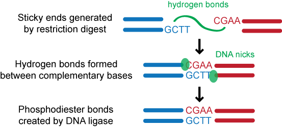

NP-Sticky: Model-Guided Ligation Calculator
DNA Ligation
DNA ligation is essential to many molecular biology manipulations. Maximizing the desired ligation product is especially important in DNA library construction for directed evolution experiments since library diversity is directly affected by ligation efficiency. The DNA ligation reaction, usually catalyzed by a DNA ligase, involves joining DNA molecule ends by creating a phosphodiester bond between the 3' hydroxyl and the 5' phosphate of adjacent nucleotides.

For decades, guidelines for ligation have been generic, consisting of ranges for molar insert:vector ratio, ligation temperature, and total DNA concentration (e.g. see commercial vendors' recommendations for T4 DNA ligase), but any further optimization relies heavily on trial and error. There is no precise control over the extent of product formation because experimental procedures utilize ends with different properties (e.g., sequence, length, and palindromicity) and inserts/vectors of varying lengths. Also, since ligation and transformation are often coupled, the troubleshooting space is exponentially increased. Furthermore, optimization requires extensive work and has to be repeated anytime the experimental conditions are varied.
Ligation Model
To guide ligation optimization more rationally, we have developed an easily parameterized thermodynamic model that predicts product distributions based on input DNA concentrations and free energies of the ligation events. This model has been validated experimentally (Ng DTW and Sarkar CA. Protein Eng. Des. Sel. 25, 669-678 (2012)). Based on our findings, we provide general insights into ligation and we outline guidelines for optimizing this reaction for both in vivo and in vitro display methodologies.
Ligation Calculator
We have also developed a ligation calculator based on the thermodynamic model described above. The calculator is an extension of the model, allowing characterization of custom-designed sticky ends. This calculator provides a means to rapidly identify optimum conditions for multi-parametric ligation reactions in order to maximize formation of the desired product and, thus, library size.
Last modified by Daphne Ng on Jan 4th, 2014